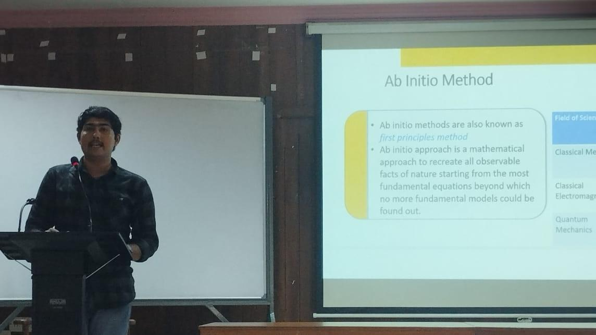

Kerala Theoretical Physics Summit 2023
The Kerala Theoretical Physics Summit 2023, held on June 3rd 2023, was a special event organized in partnership with the Department of Physics at CUSAT. The summit showcased a series of presentations by students who had been mentored through the KTPI Active Research Training (ART) program. The main objective was to bring together researchers and students from different institutions to foster the exchange of knowledge and ideas in theoretical physics.

The organizers were honored to have Prof. K. Babu Joseph, former Vice Chancellor of CUSAT and one of the esteemed first-generation theoretical physicists from Kerala, as the chief guestd.
In the Kerala Theoretical Physics Summit 2023, a total of 14 ART students had the opportunity to present their works. These talented individuals, who had been mentored through the KTPI Active Research Training program, showcased their research findings and contributions to the field of theoretical physics. Their presentations added depth and diversity to the summit, further enriching the exchange of knowledge and ideas among the participants.

The successful implementation of the above program was made possible by the dedicated efforts of the KTPI team, with special recognition given to Dr. Rathul Nath Raveendran, Dr. Anvy Moly Tom, Dr. Jose Mathew, and Manosh T. M, who served as the KTPI coordinators. Their hard work and commitment ensured the smooth organization and execution of the summit, enabling the students to present their research works effectively. Additionally, the program received invaluable support from Dr. Charles Jose and Dr. Prasad VV, who served as the CUSAT coordinators. Their guidance and involvement played a crucial role in facilitating the event at the CUSAT Physics auditorium on June 3rd, 2023. Thanks to their expertise and support, the summit was able to provide a platform for knowledge-sharing and intellectual exchange in the field of theoretical physics. Special thanks to Dr Randeep N C, Nixin Saji Abraham and Krishnadev V for the clicks, Fazil Najeeb, Dheepika M, Vishnu Namboothiri and Gokul for local support during the event.
List of projects presented during the event. Few images of KTPI ART 2022 Students presenting their works during KTPS 2023.


Once again, thank you all for being a part of the Kerala Theoretical Physics Summit 2023. We sincerely appreciate your contributions and look forward to future endeavors that will further enhance the field of theoretical physics. Until Kerala Theoretical Physics Summit 2024 !!!